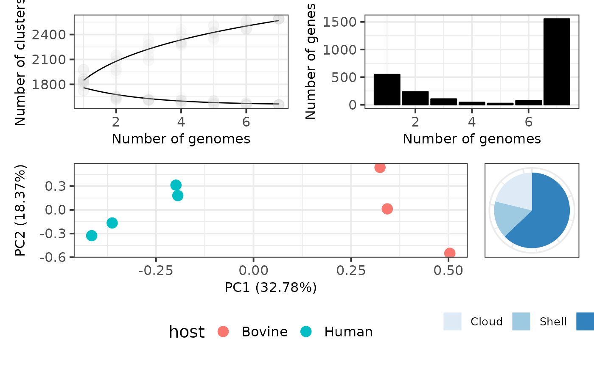

Here we introduce our cookbook which is made of recipes. Each recipe is a customized piece of code to complete different advanced tasks. By using these recipes (or creating new ones) the user can take full profit of functionalities provided by pagoo and easily interact with other R packages to perform a variety of analyses including phylogenetics, pangenome-wide association studies, sequence comparisons, ecological measures, prepare publication-quality figures, among others. If you want to standardize any analysis from your pangenome data that is not covered in this tutorial, we can help you and write a recipe. Contact us!
Start by loading the pagoo object, as in previous tutorials:
library(pagoo) # Load package
toy_rds <- system.file('extdata', 'campylobacter.RDS', package = 'pagoo')
p <- load_pangenomeRDS(toy_rds)In the section 5 - Methods and Plots we introduced a set of several plots that pagoo can generate for the basic exploration of pangenome features. These plots are generated using ggplot2, so their aesthetic features can be easily improved. Here we show how pagoo interacts with ggplot2 and some of its extensions to produce publication-quality figures from the previous standard pangenome plots, allowing flexible styling and reproducible generation of figures. Some customization has already been shown in previous tutorials.
library(ggplot2)
library(patchwork)
# 1. Pangenome curves
curves <- p$gg_curves() + # Plot core- and pan-genome curves
scale_color_manual(values = c('black', 'black')) + # Customize line colors
geom_point(alpha = .05, size = 4, color = 'grey') + # Add semi-transparent data points
theme_bw(base_size = 15) + # Customize background theme
theme(legend.position = 'none', # Remove legend
axis.title = element_text(size = 12), # Customize axis title
axis.text = element_text(size = 12)) # Customize axis text size
# 2. Gene frequency bar plots
bars <- p$gg_barplot() + # Plot gene frequency distribution
theme_bw(base_size = 15) + # Customize background color
theme(axis.title = element_text(size = 12), # Customize axis label size
axis.text=element_text(size = 12)) + # Customize axis text size
geom_bar(stat = 'identity', color = 'black', fill = 'black') # Customize bar color and borders
# 3. PCA of accessory genes colored by host
pca <- p$gg_pca(colour = 'host', size = 4) + # Plot PCA, color by host
theme_bw(base_size = 15) + # Customize background theme
theme(legend.position = 'bottom') + # Customize legend position
theme(axis.title = element_text(size = 12), # Customize axis title
axis.text = element_text(size = 12)) # Customize axis text size
# 4. Pie chart of core and accessory genes
pie <- p$gg_pie() + # Plot pie chart
theme_bw(base_size = 15) + # Customize background theme
scale_fill_discrete(guide = guide_legend(keywidth = .75,
keyheight = .75)) + # Customize fill
scale_fill_brewer(palette = "Blues") + # Customize fill color
scale_x_discrete(breaks = c(0, 25, 50, 75)) + # Customize axis scales
theme(legend.position = 'bottom', # Customize legend position
legend.title = element_blank(), # Remove legend title
legend.text = element_text(size = 10), # Change legend text size
legend.margin = margin(0, 0, 13, 0), # Change legend margins
legend.box.margin = margin(0, 0, 5, 0), # Change box margins
axis.title.x = element_blank(), # Remove X-axis title
axis.title.y = element_blank(), # Remove Y-axis title
axis.ticks = element_blank(), # Remove axis ticks
axis.text.x = element_blank()) # Remove X-axis text
# 5. Use patchwork to arrange plots using math operators
(curves + bars) / (pca + pie)
micropan Methods
Given a panmatrix, you could predict the number of core clusters and the total number of clusters in a pangenome. Several methods have been developed for this purpose, in this case a binomial mixture model implemented by micropan package is used to describe the distribution of gene clusters across genomes in a pangenome.
To use this method, simply pass the object’s pan-matrix to the micropan::binomixEstimate function:
library(micropan)
micropan::binomixEstimate(p$pan_matrix)Given that we are using a very small toy dataset, results here are not really meaningful.
Genomic fluidity is a measure of population diversity. It’s somehow similar to computing jaccard distances, but genomic fluidity describes the whole population whereas jaccard distances are computed pairwise. As above, we are passing the object’s pan-matrix to the micropan::fluidity function. In this case, lets use magrittr’s %>% operator to pipe it, and compute fluidity using 100 random samples:
A common practice to improve the annotation quality of the pangenome is to retrieve a single representative sequence of each cluster and to ‘blast’ it against a given database. The best hits annotation is then transferred to the clusters. The EggNOG database is a very comprehensive and well curated resource which includes annotation from many other databases (e.g. KEGG, COG, CAZy, etc), and the eggnog-mapper tool allows to easily transfer their annotation to any given query sequence.
This recipe shows how to write a multi-fasta file containing one representative sequence of each cluster to annotate with the EggNOG-mapper tool, and then it shows how to add this new information to the pangenome object.
The first step is to retrieve a single representative sequence from each cluster, then to translate them, and finally to write them to a multi-fasta file:
p$sequences %>% # Get the sequences
lapply("[[", 1) %>% # Select the first one as representative.
unlist() %>% # Unlist and..
DNAStringSet() %>% # ..transform to DNAStringSet.
translate(if.fuzzy.codon = "solve") %>% # Translate.
writeXStringSet(filepath = "representatives.fasta") # Write a fasta file.Now the user has to provide the representatives.fasta as input file to the eggnog-mapper. This can be done through the web server, or through the command line if it is installed. The command (on your terminal) would look somewhat like this:
Then we have to read the *.emapper.annotations file into the R session, and feed the pangenome object with its information:
library(magrittr)
# Read the annotations file
emap <- read.csv("representatives.emapper.annotations",
sep = "\t",
comment.char = "#",
header = FALSE,
na.strings = "-")
# Set column names
colnames(emap) <- c("query", "seed_ortholog", "evalue", "score", "eggNOG_OGs",
"max_annot_lvl", "COG_category", "Description", "Preferred_name",
"GOs", "EC", "KEGG_ko", "KEGG_Pathway", "KEGG_Module", "KE",
"GG_Reaction", "KEGG_rclass", "BRITE", "CAZy",
"BiGG_Reaction", "PFAMs")
# Lets take only some of them which I usually find useful. Subset the data.frame:
cluster_meta <- emap[, c("query", "COG_category", "KEGG_ko", "CAZy")]
# Clean and parse the fields before feeding it to the pangenome
cluster_meta$COG_category <- cluster_meta$COG_category %>% strsplit("")
cluster_meta$KEGG_ko <- clusert_meta$KEGG_ko %>%
gsub("ko:", "", .) %>%
strsplit(",")
cluster_meta$CAZy <- cluster_meta$CAZy %>% strsplit("")
# Add the metadata to the pangenome clusters
p$add_metadata("cluster", cluster_meta)
# Now the object contains the new information in the clusters field:
p$clustersThe core genome is composed by those genes that are present in every or almost every genome in the sample. As these genes are present in all genomes, they can be used to extract important biological information like phylogenetic relationships, study recombination or selective pressures. For doing these, core genes need to be aligned. In the next few sections we explain how to do this to perform some of the above mentioned downstream analyses.
To reveal the vertical evolutionary history of a bacterial population we should take into account the presence of horizontal acquisition of genetic material, like by means of recombination, that is maintained by the action of natural selection. Hence, we can use the Tajima’s D test of neutrality as implemented in pegas ( Paradis, 2010) to identify those core genes that are not subjected to strong selective pressures and are likely evolving neutrally.
# Load required packages
library(magrittr)
library(DECIPHER)
library(pegas)
library(ape)
p$core_level <- 100 # Set core_level to 100% to avoid
# AlignTranslation() errors.
tajimaD <- p$core_seqs_4_phylo() %>% # Core genome sequences
lapply(DECIPHER::AlignTranslation) %>% # Align translation
lapply(ape::as.DNAbin) %>% # Transform class to DNAbin
lapply(pegas::tajima.test) %>% # Compute Tajima's test
sapply('[[', 'D') # Get Tajima's 'D' statistic from each
# Which are neutral?
which(tajimaD <= 0.2 & tajimaD >= -0.2) The best practices on how to build a phylogeny from core genomes is a topic of debate. In this first example we provide a one-liner to align individual core genes (like in the previous case), produce a concatenated core genome alignment, calculate a core genome phylogeny using the Neighbor-Joining method as implemented by phangorn (Schliep, 2011), and visualize it using host metadata to color tree tips using ggtree (Yu et al., 2017). Phylogenetic tree is assigned to the phy variable, and plotted as side effect by using magrittr’s %T>% operator.
# Load required packages
library(magrittr)
library(DECIPHER)
library(Biostrings)
library(phangorn)
library(ggtree)
phy <- p$core_seqs_4_phylo() %>% # Core genome sequences
lapply(DECIPHER::AlignSeqs) %>% # Align
do.call(Biostrings::xscat, .) %>% # Concatenate alignments
setNames(p$organisms$org) %>% # Set sequence names
as('matrix') %>% # Transform to matrix
phangorn::phyDat(type = 'DNA') %>% # Transform to phangorn's phyDat
phangorn::dist.ml() %>% # Compute distance
phangorn::NJ() %T>% { # Compute NJ, and assign "phy"
{
ggtree::ggtree(.) %<+% # Create ggtree
as.data.frame(p$organisms) + # Get organisms metadata
ggtree::geom_tippoint(aes(colour = host)) + # Add coloured tip points
scale_color_brewer(palette = 'Set1') # Set color palette
} %>%
print()
}The following method is similar to the previous, but in this case we are optimizing the topology and branch lengths by maximum likelihood method implemented in phangorn package. Although this is a fully working example, its purpose is just to illustrate the idea. You should consider tuning the parameters to better fit your dataset (e.g.: just 4 discrete gamma distributions for a whole coregenome alignment may be too low).
# Load required packages
library(magrittr)
library(DECIPHER)
library(Biostrings)
library(phangorn)
library(ggtree)
phy <- p$core_seqs_4_phylo() %>% # Core genome sequences
lapply(DECIPHER::AlignSeqs) %>% # Align
do.call(Biostrings::xscat, .) %>% # Concatenate alignments
setNames(p$organisms$org) %>% # Set sequence names
as('matrix') %>% # Transform to matrix
phangorn::phyDat(type = 'DNA') %T>% # Transform to phangorn's phyDat
assign('dat', ., .GlobalEnv) %>% # Assign to "dat" in .GlobalEnv
phangorn::dist.ml() %>% # Compute distance
phangorn::NJ() %>% # Compute NJ (initial tree)
phangorn::pml(data = dat, k = 4) %>% # Compute likelihood with 4 discrete
# gamma distributions.
phangorn::optim.pml(rearrangement = "stochastic", # Optimize likelihood with
# stochastic rearrangements,
optGamma = TRUE, # optimize gamma rate parameter,
optInv = TRUE, # optimize prop of variable size,
model ="GTR") %>% # and use "GTR" model.
magrittr::extract2("tree") %T>% { # Extract the tree only, and pass
{ # it to ggtree.
ggtree::ggtree(.) %<+% # Create ggtree
as.data.frame(p$organisms) + # Get organisms metadata
ggtree::geom_tippoint(aes(colour = host)) + # Add coloured tip points
scale_color_brewer(palette = 'Set1') # Set color palette
} %>%
print()
}Identifying population structure from genomic information is a common problem in microbial ecology. This aims to identify discrete sub-populations within a more heterogeneous population, which is helpful to detect associations with particular phenotypes, geographic origin, host-association, etc. There are various methods for doing this, but probably the most used in microbial genomics is hierBAPS (Cheng et al., 2013) which has been re-implemented in R as rhierBAPS (Tonkin-Hill et al., 2018). In the following recipe we will combine previous examples to 1) align core clusters; 2) compute Tajima’s D statistic over aligned core clusters to identify the ones that are likely to be evolving neutrally; 3) concatenate selected neutral clusters; 4) Run the hierBAPS algorithm; 5) extract lineage information and add it to the pagoo object as organism’s metadata; and 6) compute and plot a tree with lineage information as colour tips.
library(magrittr)
library(DECIPHER)
library(rhierbaps)
library(ape)
library(phangorn)
# 0. Always use core_level at 100% when using DECIPHER::AlignTranslation()
p$core_level <- 100
# 1. Align translation of core genes
ali <- p$core_seqs_4_phylo() %>% # Core genome sequences
lapply(DECIPHER::AlignTranslation) # Align translation
# 2. Identify neutral core clusters
tajD <- ali %>%
lapply(ape::as.DNAbin) %>% # Transform class to DNAbin
lapply(pegas::tajima.test) %>% # Compute Tajima's test
sapply('[[', 'D') # Subset D statistic
neutral <- which(tajD <= 2 & tajD >= -2)
# 3. Concatenate neutral core clusters
concat_neu <- ali[neutral] %>% # Select neutral clusters
do.call(Biostrings::xscat, .) %>% # Concatenate alignments
setNames(p$organisms$org) %>% # Set sequence names
as('matrix') %>% # Transform to matrix
tolower() # Translate to lower case
# 4. Compute structure
rhb <- hierBAPS(snp.matrix = concat_neu, # Input matrix alignment
n.pops = 10, # Max number of subpopulations
max.depth = 1, # Max depth for hierarchical clustering
n.extra.rounds = 5) # Extra rounds to ensure convergence
# 5. Add lineage as metadata to organisms in pagoo object
res <- rhb$partition.df
lin <- data.frame(org = as.character(res[, 1]),
lineage = as.factor(res[, 2]))
p$add_metadata(map = 'org', data = lin)
# 6. Compute tree and plot it with lineage information
concat_neu %>%
phangorn::phyDat(type = 'DNA') %>% # Transform to phangorn's phyDat
phangorn::dist.ml() %>% # Compute distance
phangorn::NJ() %>% # Compute NJ
ggtree::ggtree() %<+% # Create ggtree
as.data.frame(p$organisms) + # Get organisms metadata
ggtree::geom_tippoint(aes(colour = lineage)) # Colour tips with lineage infoThe following recipe computes accessory genome jaccard’s distance and nucleotide diversity of synonym sites for each pair of genomes, and then plot it with a linear regression curve. This method provides insights of accessory genome adaptative evolution. If both magnitudes are not correlated, it could mean that there are some selective pressures shaping clade’s evolution. It first sets the core_level threshold to 100%, then creates a matrix to store pairwise distances and synonym nucleotide diversities. Accessory genome Jaccard distance between each pair of organisms is computed by a pagoo method which is basically a wrapper of vegan::vegdist function. Then there is a long code block with the method to align each core gene and select their polymorphic synonym sites. With this input, pairwise nucleotide diversity is computed with pegas::nuc.div function. At the end, a correlation between both magnitudes is plotted.
library(magrittr)
library(IRanges)
library(Biostrings)
library(DECIPHER)
library(ape)
library(pegas)
# Set core level to 100%. This recipe only works if this is set to 100%.
p$core_level <- 100
# Create pairs matrix
pairs <- data.frame(t(combn(nrow(p$organisms), 2)))
colnames(pairs) <- c('org1', 'org2')
# Compute paired jaccard similarity, transform to matrix
jaccard_sim <- as.matrix(p$dist(method = "jaccard", binary = TRUE))
# Fill results matrix
pairs$jaccard_sim <- apply(pairs, 1, function(i){
ii <- i[1]
jj <- i[2]
jaccard_sim[ii, jj]
})
# Return only synonymous polymorphic sites.
# First, it removes non-synonymous codons, and then retains only
# polymorphyc sites.
syn_poly_sites <- p$core_seqs_4_phylo() %>%
lapply(function(x){
lns <- elementNROWS(x) # Align translatation filtering
tali <- x[which(lns != 0)] %>% # truncated codons and returning
Biostrings::subseq(1L, lns %/% 3 * 3) %>% # both DNA and AA alignments.
DECIPHER::AlignTranslation(type = "both")
syno <- tali[[2]] %>% # Identify non-synonymous
Biostrings::consensusMatrix() %>% # codons.
magrittr::equals(0) %>%
magrittr::not() %>%
colSums() %>%
magrittr::equals(1) %>%
which()
neut <- tali[[1]] %>% # Remove non-synonymous codons.
lapply(function(x){
IRanges::successiveViews(
x, rep.int(3L, length(x) %/% 3L))
}) %>%
lapply('[', syno) %>%
lapply(unlist) %>%
Biostrings::DNAStringSet()
poly <- neut %>% # Identify polymorphic sites.
Biostrings::consensusMatrix() %>%
magrittr::equals(0) %>%
magrittr::not() %>%
colSums() %>%
magrittr::is_greater_than(1) %>%
which()
lapply(neut, '[', poly) %>% # Retain only polymorphic
Biostrings::DNAStringSet() # sites
}) %>%
do.call(Biostrings::xscat, .) %>% # Concatenate.
setNames(p$organisms$org) %>% # Set names.
ape::as.DNAbin() # Convert to DNAbin class.
# Compute paired nucleotide diversity, and fill results matrix
pairs$nuc_div <- apply(pairs, 1, function(i){
ii <- i[1]
jj <- i[2]
pair <- c(syn_poly_sites[ii], syn_poly_sites[jj])
pegas::nuc.div(pair)
})
# Plot correlation with R-base graphics
plot(jaccard_sim ~ nuc_div, pairs)
abline(lm(jaccard_sim ~ nuc_div, pairs))